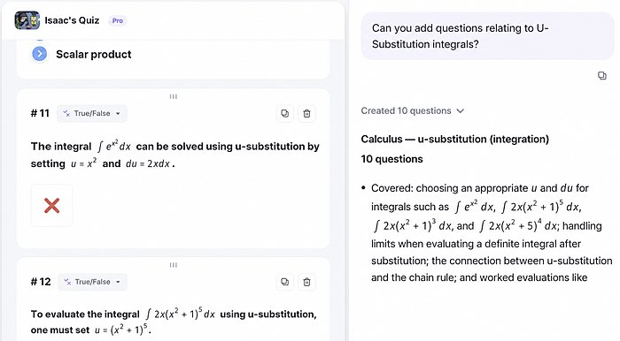
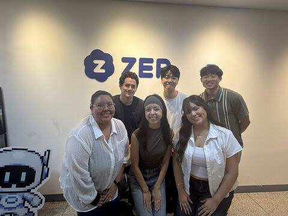

Jun – Aug 2026
ZEP
Go-to-Market Specialist & Business Analyst
- Executed 4,000+ prospecting emails and messages across South Korea, Estonia, Finland and the United States, building and advancing an international customer pipeline.
- Secured 50+ meetings with educators, administrators and organizational partners, and presented ZEP QUIZ demonstrations tailored to each client's needs.
- Helped launch three pilot programs with Estonian schools, and secured partnerships with EdTech organizations in Estonia and Finland.
- Conducted market and customer research, analyzed expansion opportunities, and managed outreach records and pipeline progress in Notion.

